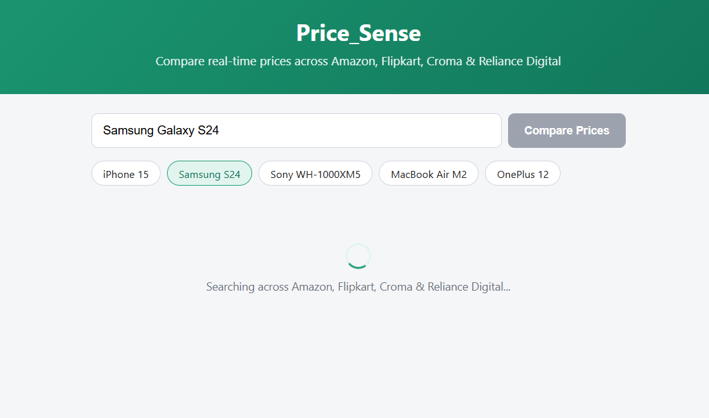
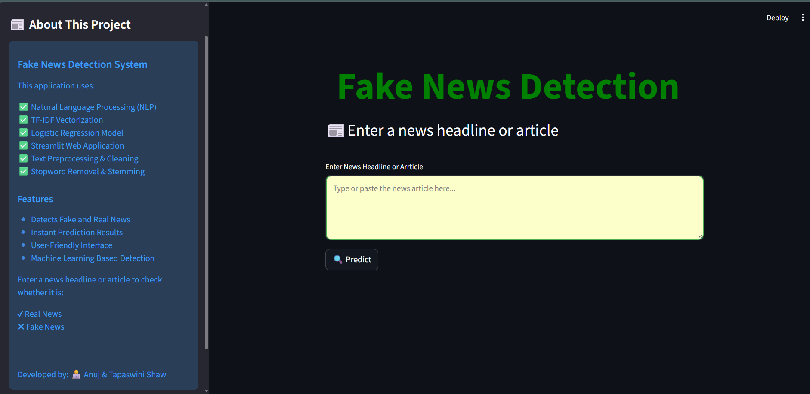
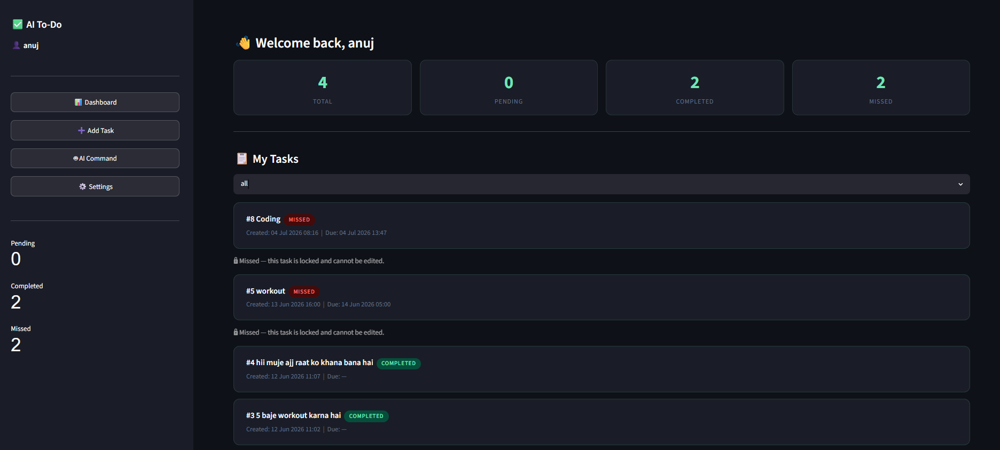

Portfolio Work
Featured Projects
Explore real-world machine learning models, offline local LLM architectures, data analytics dashboards, and productivity tools.


AI Middleware & LLMs
Prompt Optimizer
Middleware AI tool sitting between the AI model and user inputs. Analyzes context and refines prompts dynamically to maximize inference accuracy and output fidelity.




Data Science & Analytics
Data Analytics & Viz
Comprehensive data analysis and statistical visualization using Python (Pandas, Matplotlib, Seaborn) translating raw multi-source epidemiological metrics into actionable charts.